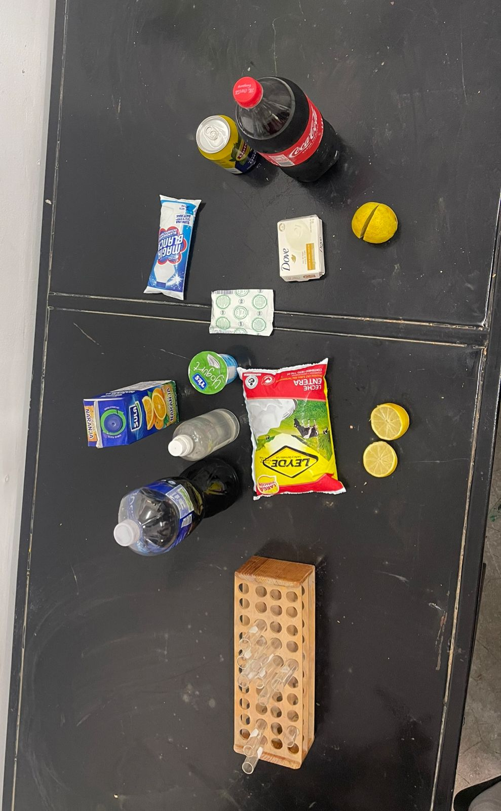

| Start | Introduction and hypothesis | Materials and procedure | Result and conclusion |
|---|
|
Test tube Cabbage Juice Orange Juice Milk Coca Cola Lemon Juice Yogurt Soap Bicarbonate Tea Lipton Alcohol Nelson and Ronald pees Chloride |
 |
Procedure 1. Put a small amount of cabbage juice into the test tube.
|